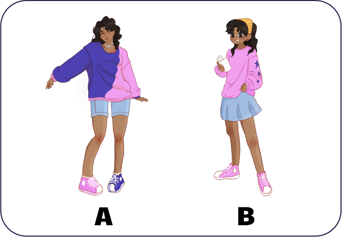
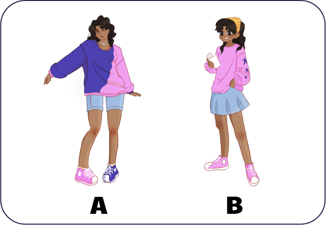

CHARACTER DESIGN
Itara
Teenager from Yucatán with a deep gaze and a restless soul. Curious, determined, and eager for knowledge, she seeks to discover her vocation in a world that imposes gender expectations. Despite doubts and fears, her connection to her grandfather and her perseverance drive her to break stereotypes and follow her own path.


 



ILLUSTRATION
I was responsible for the narrative and illustration of the project, creating the visual structure and the atmosphere that accompanies the story. This work was developed as a collaborative thesis, with the aim of generating a sensitive and reflective connection with teenagers in search of themselves.

2037 is a narrative mobile game that invites players to reflect on environmental collapse through the eyes of a teenager navigating friendship, memory, and survival. The project focused on developing Morgan’s emotional depth and moral complexity through character-driven storytelling, visual worldbuilding, and interactive decision-making.
Degree project


CHARACTER DESIGN
Morgan
An introspective and resilient teenager, with eyes full of questions and pockets full of forgotten things. Observant by nature, and with a deep need to understand the world, Morgan seeks meaning, refuge, and something more than just survival in a world where imagining the future feels like a luxury.


*Morgan is a neutral identity whose form depends on the player’s path. At the start of the game, you can choose from three variations of Morgan, each expressing a different worldview.
OTHER CHARACTERS2037 - Background
Contenido de Background...